Четыре занятия — четыре слова
- Организация — объект менеджмента (это занятие).
- Менеджмент — функции: планирование, организация, мотивация, контроль, анализ, учёт. У разных авторов их от 4 до 12, но все сходятся: менеджмент — это действия.
- Оргструктуры — через них менеджмент «проецируется» на объект.
- Среда и управленческие решения — внешняя и внутренняя среда, этапы принятия решений.
Преподаватель — Александр Николаевич Дугин: управленческая работа в ЯрГУ им. П. Г. Демидова, три года — в IT-компании «Тензор». Экзамен — тест в Google-форме в конце курса. Слайды обещал прислать в PDF.
Любимое высказывание о руководителе
«Наилучший руководитель — тот, кто обладает достаточным чутьём, чтобы выбрать подходящих людей, способных выполнить нужную работу, и достаточной сдержанностью, чтобы не путаться у них под ногами» (Теодор Рузвельт). Раз выбрал и дал полномочия — не мешай.
Ещё со слайдов: «Менеджер — человек, принимающий быстрые решения, и иногда верные» (Элберт Хаббард); «тридцать лет на должности — это однолетний опыт, повторённый тридцать раз» (на слайде — Роберт Танненбаум); «даже лучший менеджер — как мальчик с огромной собакой на поводке: смотрит, куда она тянет, и ведёт её туда» (Ли Якокка). Про «однолетний опыт» преподаватель заметил: сегодня это верно не всегда, даже в вузе всё меняется каждый месяц.
Организация и её ключевые признаки
Как пловцу сначала нужно понять, где он плывёт — в ванне, бассейне или море, — так и менеджеру сначала нужен объект. Объект менеджмента — организация.
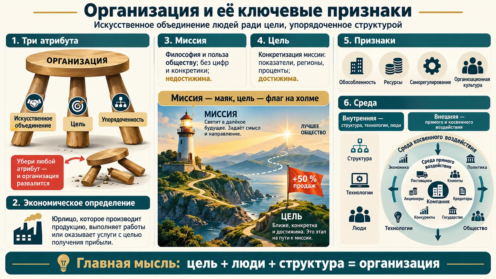
Три атрибута — без них организации нет
- Искусственное объединение — люди добровольно договорились действовать вместе; стихийно организация не возникает.
- Цель (вид деятельности) — ради чего она создана.
- Упорядоченность — элементы связаны между собой; главный инструмент — оргструктура.
| Ключевой признак | Суть |
|---|---|
| Миссия | Философия и смысл существования, польза обществу. Недостижима, к ней стремятся. Без цифр и конкретики. |
| Цель | Конкретизация миссии: показатели, регионы, проценты. Достижима и измерима. |
| Обособленность | Границы с внешним миром — физические и нефизические (культура, структура, взгляды). |
| Ресурсы | По слайду — семь видов: технические, технологические, кадровые, пространственные, информационные, финансовые, интеллектуальные. На лекции добавлены предпринимательские способности. |
| Саморегулирование | Внутренние механизмы приспособления к изменениям внутренней и внешней среды. |
| Организационная культура | Коллективные ценности, ритуалы, символика, оформление интерьеров. |
| Внутренняя среда | Структура и подразделения, их взаимодействие, разделение труда, технологии, люди. |
| Внешняя среда | Первый ряд переменных (деловое окружение, микросреда, прямое воздействие): поставщики, потребители, акционеры, кредиторы, конкуренты — с ними двустороннее взаимодействие. Второй ряд (фоновое окружение, макросреда, отдалённое воздействие): экономика, политика, право, социокультурные, экологические, природно-географические факторы — им подчиняются, «уходят» от них или нейтрализуют. |
Миссия ≠ цель
- «Увеличить продажи на 50 %» и «выйти в Костромскую область» — это задачи (цели), а не миссия. В правильно сформулированной миссии нет цифр.
- Конкуренты — среда прямого воздействия. Так на слайде преподавателя и в учебнике Мескона, Альберта и Хедоури. Устно на лекции конкуренты прозвучали среди «тех, кому мы безразличны» — это оговорка. К косвенной среде относятся факторы (экономика, политика, технологии), а не конкретные организации.
Миссия крупных компаний — без единой цифры
- «Газпром»: надёжное, эффективное и сбалансированное обеспечение потребителей природным газом, другими энергоресурсами и продуктами их переработки.
- РЖД: эффективное развитие конкурентоспособного транспортного бизнеса, ядро которого — задачи национального перевозчика грузов и пассажиров и владельца инфраструктуры.
- Сбербанк: «Мы даём людям уверенность и надёжность, мы делаем их жизнь лучше, помогая реализовывать устремления и мечты».
- «Дикси»: удовлетворять ежедневные потребности большинства жителей России с лучшим соотношением цены и качества — «Просто, Рядом, По-соседски».
Цель того же «Дикси» выглядела бы иначе: «открыть 300 магазинов в ЦФО за год» — с цифрой, сроком и регионом.
Если свернуть всё до главного
У любой организации есть цель, она состоит из людей и создана людьми, у неё есть структура. Структура — это не только «квадратики» на схеме, но и взаимосвязи между элементами.
Мескон, Альберт, Хедоури
Майкл Мескон, Майкл Альберт, Франклин Хедоури — авторы учебника «Основы менеджмента» (1985, русский перевод 1992). Это самый известный в России учебник менеджмента. Деление внешней среды на прямое и косвенное воздействие и классическое определение организации — оттуда.
Проверьте свою миссию за минуту
- Если в миссии есть число, срок или регион, это цель. Перенесите её в стратегию.
- Спросите трёх сотрудников, в чём польза вашей организации обществу. Если ответы совпадают с миссией, она работает. Если нет, это «табличка в рамке», которую в вузах вешали в каждом кабинете около 2010 года.
- Выпишите среду прямого воздействия поимённо: ключевые поставщики, клиенты, кредиторы, регуляторы. Это ваш список «кому должно быть хорошо, чтобы было хорошо нам».
Новая организация в эпоху перемен
Мир стал непредсказуемее, и вместе с ним меняется представление о том, какой должна быть организация.
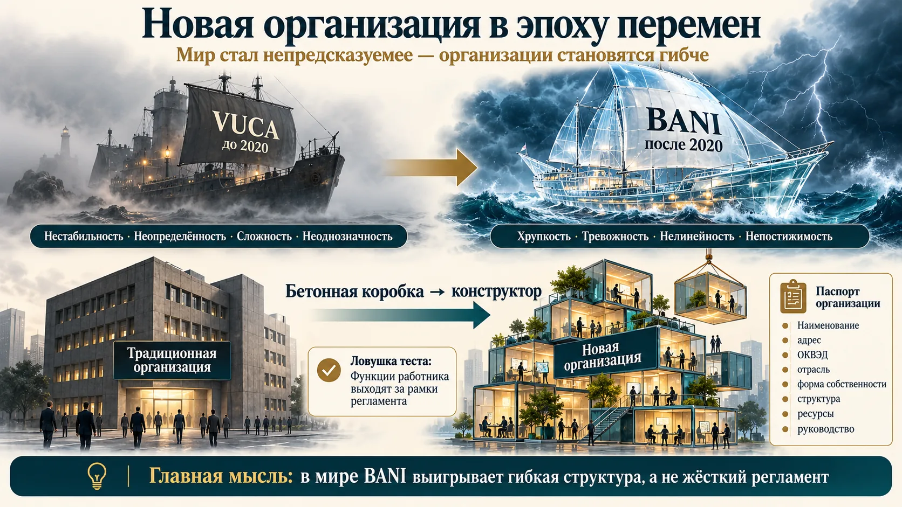
| Традиционная организация (условно до 2020 г.) | Новая организация | |
|---|---|---|
| Режим | стабильность | динамичность |
| Структура | фиксированная, не меняется | гибкая: сегодня одна, завтра другая |
| Работа | определяется должностью | определяется задачей; функции шире регламента |
| Графики | единые | разные: удалёнка, 2 через 2, 3 через 1 |
| Коллективы | постоянные отделы, ориентация на отдельного человека | временные рабочие задания, ориентация на коллектив, развитие навыков |
| Решения | принимают только менеджеры, команды сверху | работники участвуют в принятии решений |
| Ориентир | правила и нормы организации | конкретный заказ клиента |
| Люди и место | однородный персонал, работа в офисе в определённые часы | многообразие персонала, работа в любом месте и в любое время |
«Функции работника выходят за рамки регламентированных трудовых обязанностей»
Это нормально, неприемлемо, нехарактерно или характерно для определённого типа организаций? Ответ: характерно для новой организации. Речь не о том, что бухгалтер садится за экскаватор заболевшего коллеги. Работник в своей зоне ответственности делает больше, чем записано в регламенте.
VUCA и BANI
VUCA — Volatility, Uncertainty, Complexity, Ambiguity: нестабильность, неопределённость, сложность, неоднозначность. Термин появился в Военном колледже армии США в конце 1980-х, потом перешёл в менеджмент.
BANI — Brittle, Anxious, Non-linear, Incomprehensible: хрупкий, тревожный, нелинейный, непостижимый. Термин предложил футуролог Джамаис Кашио в 2020 году: мир не просто неопределённый, а ломается внезапно, и причинно-следственные связи перестают быть очевидными.
Паспорт организации
Как у автомобиля есть прайс-лист (мощность, скорость, расход), так и любую организацию можно описать «чек-листом». В нём наименование, адрес, назначение (по ОКВЭД), отраслевая принадлежность, форма собственности, структура, ресурсы, культура и руководство. Обычно это карточка организации на сайте или в реестре.
Как мир BANI выглядит в отчётности компаний
- 2020, пандемия. За несколько недель офисные компании перевели людей на удалённую работу, рестораны — на доставку. Выиграли те, у кого структура уже была гибкой.
- 2022, уход иностранных поставщиков. Российским производителям пришлось за месяцы перестроить логистику и найти замену оборудованию и комплектующим. Это «хрупкость» и «нелинейность» BANI в чистом виде: одна внешняя причина ломает отлаженные цепочки.
- Ответ компаний — кросс-функциональные «штабы» и проектные команды на время кризиса, то есть элементы новой организации поверх традиционной.
Насколько «новая» ваша организация
- Есть ли у вас временные проектные команды из разных отделов, или любая задача идёт по вертикали?
- Может ли сотрудник сделать больше регламента без согласования трёх подписей? Если нет, в мире BANI вы проиграете в скорости.
- Гибкость не отменяет ответственности: зону, в которой работник «выходит за рамки», нужно назвать явно.
Трудовая организация: формальная и неформальная
Объект менеджмента — прежде всего трудовая организация. В ней есть официальная схема и живые отношения, и менеджеру приходится управлять обеими.
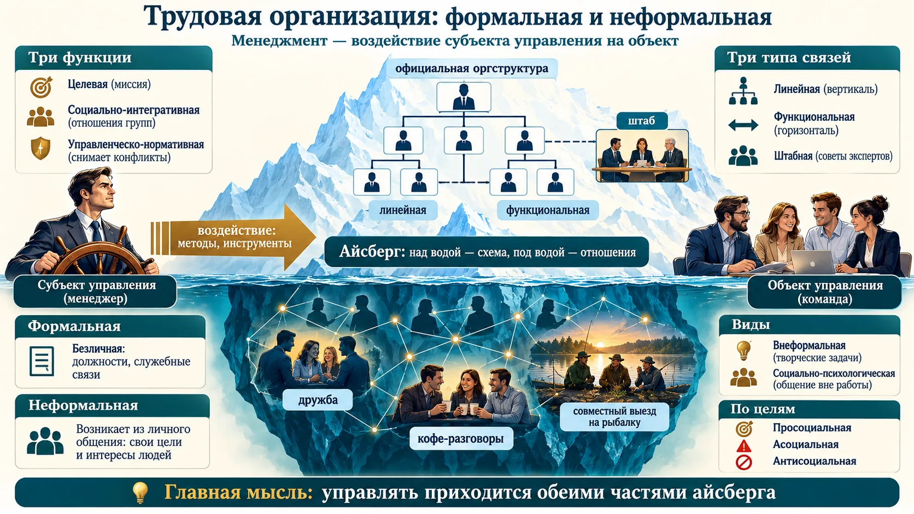
Три устойчивые функции трудовой организации
- Целевая — все подчинены цели: выпускать продукцию, обучать, перевозить пассажиров. Это и есть миссия.
- Социально-интегративная — группы с разными интересами вступают во взаимоотношения: решают, делегируют, спорят, увольняют, принимают.
- Управленческо-нормативная — результат менеджмента: подавлять конфликты, учитывать интересы групп, противостоять негативным факторам внешней среды.
Сознательное движение к известной цели в рамках общей структуры. Безлична: люди в ней — сотрудники с должностями, только служебные связи. Три типа связей есть в любой организации, их не противопоставляют:
- вертикальная (линейная) — нижестоящий подчиняется вышестоящему, руководство подразделением в одном лице;
- функциональная — руководство распределено между несколькими лицами по функциям;
- штабная — советы экспертов и помощников вне основной структуры (учёный совет вуза).
Спонтанно складывается из долгого личного общения. По слайду, причина — недостатки формальной организации: ограниченность (она не может охватить все процессы) и специфика индивида (интересы человека шире его функции).
- по содержанию: внеформальная — отношения для творческих задач в рамках работы; социально-психологическая — общение вне работы (рыбалка);
- по целям: просоциальная, асоциальная, антисоциальная.
Пример: прошлый поток программы сам организовал уборку территории у памятника. Это просоциальная неформальная организация.
Три слова, которые легко перепутать
- Внеформальная — всё ещё про работу (творческие задачи), социально-психологическая — уже вне работы.
- Асоциальная — в стороне от общества, занята своим; антисоциальная — против общества.
- Штабная связь — не «главный штаб», а советы и эксперты, вынесенные за пределы линейной иерархии.
Как работать с подводной частью айсберга
- Найдите неформальных лидеров: к кому идут за советом в обход схемы. Их поддержка при изменениях важнее приказа.
- Внеформальную организацию выгодно поддерживать: рабочие чаты, кросс-командные сессии, «кофе с коллегой» ускоряют решения.
- Если неформальные правила расходятся с формальными (как на самом деле согласуют закупки), задокументируйте реальный процесс. Не делайте вид, что его нет.
Классификации организаций
Услышав «РЖД» или «Сбербанк», мы сразу понимаем, чья это компания и чем она занимается. Это и есть классификация: собственность, цель, масштаб, отрасль, происхождение капитала.
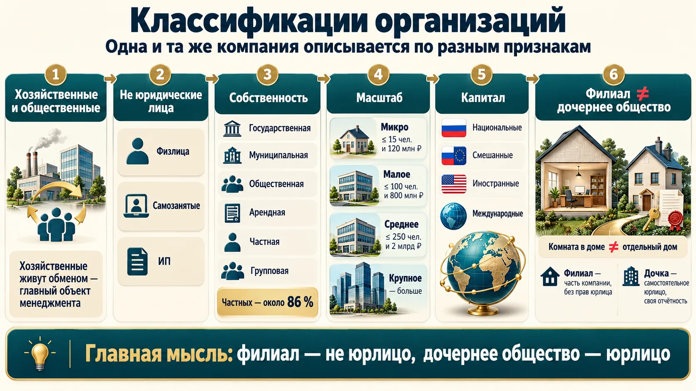
Основные признаки
- Правительственные и неправительственные — статус правительственной организации даётся органами власти (на лекции прозвучало «если государство участвует в капитале»).
- Коммерческие и некоммерческие, бюджетные и внебюджетные.
- Хозяйственные и общественные. Хозяйственные «живут обменом»: производят, чтобы продать. Общественные производят продукт для себя. Главный объект менеджмента — хозяйственные.
- Хозяйственные — юридические лица и неюридические: физлица, самозанятые, индивидуальные предприниматели.
- Собственность: государственная, муниципальная, общественная, арендная, частная, групповая.
Сколько у нас организаций
- Росстат, 2023: 3 264 тыс. организаций; частных — 85,5 % (в 2010-м — 85,1 %), муниципальных 5,1 %, государственных 2,5 %, общественных и религиозных 3,9 %. Больше всего — в торговле и ремонте автотранспорта (811 тыс.), строительстве (390 тыс.), операциях с недвижимостью (298 тыс.).
- Действующих сейчас (сервис проверки компаний, 2025): около 3,2 млн юрлиц и 4,9 млн ИП. Ярославская область — 28 тыс. юрлиц и 34 тыс. ИП, из них в Ярославле по 18 тыс.
- 01.01–11.11.2025: зарегистрировано 163,6 тыс. юрлиц и 784,6 тыс. ИП, прекратили деятельность 233,9 тыс. юрлиц и 559,6 тыс. ИП. Юрлиц закрывается больше, чем открывается; ИП — наоборот.
- Ярославская область за тот же период: открылось 823 юрлица и 5 513 ИП, закрылось 2 209 юрлиц и 3 969 ИП. Чаще всего регистрируют дистанционную торговлю, грузоперевозки, рекламу.
Источник: слайды преподавателя (Росстат; выгрузка из сервиса проверки контрагентов на 11.11.2025).
| Категория | На лекции | По 209-ФЗ (ч. 1.1 ст. 4) и ПП РФ № 265 |
|---|---|---|
| Микропредприятие | до 15 человек | до 15 человек и доход до 120 млн ₽ |
| Малое | до 100 человек и до 800 млн ₽ | 16–100 человек и до 800 млн ₽ |
| Среднее | до 250 человек и до 2 млрд ₽ (на слайде: в отдельных видах деятельности до 1,5 тыс. человек) | 101–250 человек и до 2 млрд ₽ (в лёгкой промышленности до 1 000, в общепите до 1 500 человек) |
| Крупное | всё, что больше | всё, что больше |
По происхождению капитала
- Национальная — 100 % капитала у собственников своей страны.
- Смешанная — есть иностранные собственники.
- Иностранная — только иностранные собственники.
- Международная — работает хотя бы ещё в одной стране. Признаки: сеть филиалов и «дочек» за рубежом, технологическая кооперация, управление из одного центра. По капиталу большинство международных фирм — национальные.
Пример: «Магнит» (АО «Тандер») и «Пятёрочка» («Агроторг», управляет X5) — национальные компании, «дочки» крупных групп. Обе входят в десятку крупнейших компаний страны по выручке (слайд преподавателя).
Филиал ≠ дочернее общество
Филиал (лат. filialis — «сыновний») — обособленное подразделение юрлица вне места его нахождения. Не юридическое лицо: имущество даёт головная компания, руководитель действует по доверенности, сделки — от имени головной компании, своей бухгалтерии и аудита нет.
Дочернее общество — хозяйственное общество, решения которого определяет материнское (преобладающее участие в капитале, договор или иначе). Юридически самостоятельно: выступает на рынке от своего имени и за свой счёт.
Образ: филиал — комната в доме, «дочка» — отдельный дом со своим ключом.
Филиал или «дочка»: что выбрать руководителю
- Филиал проще открыть и закрыть, головная компания полностью контролирует его. Но она же отвечает по всем его обязательствам.
- Дочернее общество отделяет риски: долги «дочки» по общему правилу не переходят на материнскую компанию. Зато нужны своя бухгалтерия, отчётность и директор.
- Перед выходом на рынок нового региона сравните: нужна ли там самостоятельность и защита от рисков или достаточно точки продаж.
Правовые формы организаций
Главное различие — кто объединяется: люди или капиталы. От этого зависит, чем участники отвечают по долгам.
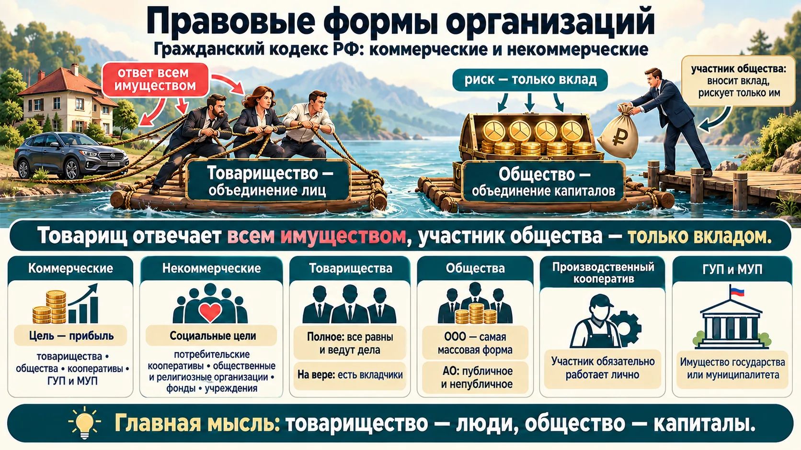
| Гражданский кодекс РФ | Виды | Отличительная черта |
|---|---|---|
| Хозяйственные товарищества | полное; на вере (коммандитное) | в полном все равноправны и ведут дела; в коммандитном есть вкладчики |
| Хозяйственные общества | ООО; АО публичное (раньше ОАО) и непубличное (раньше ЗАО) | ООО — самая массовая форма; АО — для крупного бизнеса |
| Производственный кооператив | артель | участник обязательно лично работает в кооперативе |
| ГУП и МУП | государственные и муниципальные унитарные предприятия | создаются органом власти; имущество федеральное или муниципальное |
| Некоммерческие | потребительские кооперативы, общественные и религиозные организации, фонды, учреждения и др. | цель — не прибыль; прибыль возможна, но не главная |
Те же типы под другими именами
- Единоличное предприятие — один владелец или семья, отвечает всем имуществом.
- Европа: компании публичного типа (аналог ПАО) и частного типа (аналог ООО).
- США: партнёрство общее и ограниченное (аналоги полного и коммандитного товариществ), корпорация (Corp., Inc. — аналог АО).
- Траст (по слайду) — договор доверительного управления: участники передают имущество доверительному собственнику (часто банку) и формально теряют право управлять. На лекции траст сблизили с трестом, но это разные понятия.
Чего не было на лекции
По ст. 50 ГК РФ к коммерческим организациям относятся ещё крестьянские (фермерские) хозяйства и хозяйственные партнёрства. Список некоммерческих длиннее: ассоциации и союзы, автономные НКО, товарищества собственников недвижимости, казачьи общества, публично-правовые компании и др.
Источник: Гражданский кодекс РФ, ст. 50, 66, 123.1–123.24.
Кто чем отвечает
- Полный товарищ — всем имуществом; коммандитист и участник ООО — только вкладом.
- «Публичное АО» и «открытое АО» — одно и то же по смыслу. Названия ОАО и ЗАО отменены реформой ГК 2014 года, но в тестах встречаются.
- В производственном кооперативе обязательно личное трудовое участие. В потребительском его нет, и это некоммерческая организация.
Почему вокруг столько ООО и ИП
По словам преподавателя, это простая традиционная форма. ООО ограничивает риск вкладом, а АО сложнее создавать и вести: эмиссия акций, реестр, раскрытие информации. Полные товарищества почти не встречаются: мало кто готов отвечать по долгам бизнеса квартирой.
Объединения организаций
Единой законодательной классификации объединений нет: как собственник назовёт, так и будет. Поэтому определяйте тип объединения по сути соглашения, а не по вывеске.
Девять ситуаций — девять форм
Прочитайте определения ниже, затем пройдите тренажёр. Картинка-шпаргалка — после него.
| Форма | Суть соглашения |
|---|---|
| Ассоциация (союз) | сотрудничество при полной самостоятельности: единая политика, координация НИОКР, защита общих интересов; решения рекомендательные, можно состоять в нескольких |
| Картель | близкие по профилю предприятия согласуют объёмы, цены, условия продаж, делят рынки; цель — прибыль за счёт подавления конкуренции; запрещён |
| Консорциум | временное объединение под конкретный капиталоёмкий проект; разные отрасли и формы; нет централизации управления |
| Концерн | единая производственно-сбытовая система; централизованы финансы и инвестиции, участники остаются юрлицами; головное предприятие — холдинг |
| ФПГ | концерн, объединяющий производственные, банковские и страховые структуры |
| Синдикат | разновидность картеля: производители однородной продукции создают единую торговую сеть (или общее снабжение) |
| Пул | объединение картельного типа: порядок распределения общей прибыли |
| Трест | жёсткая форма: участники полностью теряют производственно-коммерческую самостоятельность и статус юрлица |
| Холдинг | головная компания владеет контрольными пакетами других |
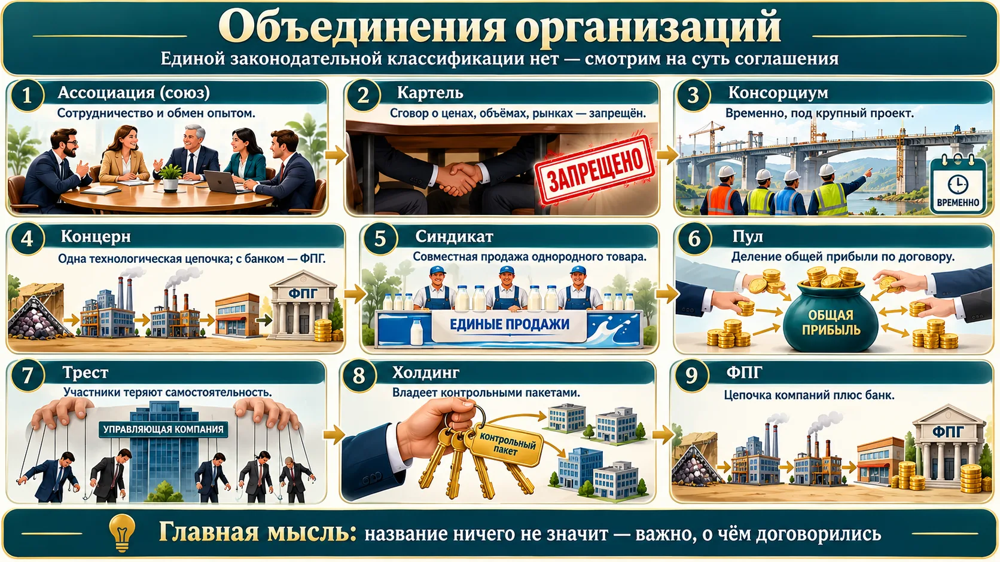
Где лекция расходится с Гражданским кодексом
- «Объединений нет в Гражданском кодексе» — верно для картелей, концернов, синдикатов, пулов: это не организационно-правовые формы. Но ассоциация (союз) — форма некоммерческой организации по ст. 123.8 ГК РФ.
- «Корпорация = акционерное общество» — так в американском смысле и в разговорной речи. В ГК РФ с 2014 года корпоративные юрлица — все, где участники имеют право членства: ООО, АО, товарищества, кооперативы, ассоциации (ст. 65.1).
- Концерн и холдинг на лекции почти слились. Признак концерна — технологическая цепочка, признак холдинга — владение контрольными пакетами.
Как это выглядело в жизни
- Синдикат: «Продамет» (1902) — общество для продажи изделий российских металлургических заводов. Заводы производили сами, а продавали через общую контору.
- Трест: Standard Oil Trust Джона Рокфеллера (1882). Акционеры десятков нефтяных компаний передали акции доверенным лицам, и компании потеряли самостоятельность. Против таких трестов в США приняли антимонопольный закон Шермана (1890), отсюда слово «антитрестовский».
- Картель: ОПЕК часто называют картелем — страны согласуют квоты добычи. Внутри страны картели запрещены: ФАС регулярно раскрывает сговоры на госзакупках, когда «конкуренты» заранее делят лоты.
- Консорциум: Airbus начинался в 1970 году как консорциум авиастроителей Франции, ФРГ (позже Великобритании и Испании) под общий проект самолёта.
- Холдинг: АФК «Система» владеет долями в МТС, Segezha Group, «Медси» и других бизнесах разных отраслей. Технологической цепочки нет, поэтому это не концерн.
- Название ≠ форма: «Концерн «Калашников»» — по форме акционерное общество, а «Ростех» — государственная корпорация, то есть по закону некоммерческая организация.
Источники: история «Продамета» и Standard Oil — БРЭ; ФАС России — раздел «Борьба с картелями»; ЕГРЮЛ.
Консорциумы «для бумажки»
Университет участвует чуть ли не в двадцати консорциумах и платит взносы в пять ассоциаций, «зачастую для бумажки». Но они нужны: участие требуется в крупных проектах вроде программы «Приоритет», это престиж и экспертиза программ. По словам преподавателя, разница между «финансами предприятий» и «корпоративными финансами» тоже лишь в названии, пришедшем в 90-е.
Объединяться можно, сговариваться — нет
- Ассоциация, союз, консорциум — законные способы попасть в грант, отраслевой проект или общий бренд. Под них нужен договор с целями и сроком.
- Любое соглашение с конкурентами о ценах, объёмах или разделе клиентов — это картель. Ст. 11 Закона о защите конкуренции, оборотные штрафы и уголовная ответственность по ст. 178 УК РФ. Название «ассоциация» не спасает.
Модели организации
Модели — теоретические обобщения: «кто-то сел и обобщил» взгляды разных учёных. В чистом виде таких организаций нет, в любой реальной есть элементы нескольких моделей.
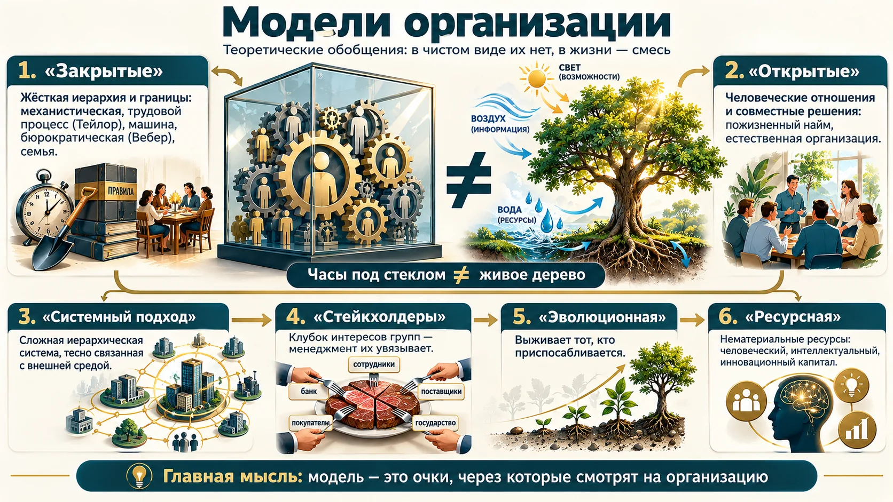
Чёткие границы с внешней средой, жёсткая иерархия, власть и подчинение.
- Механистическая (модель рациональной бюрократии) — сотрудник как винтик; рынок завоёвывают снижением издержек, консерватизм, всеобщий контроль.
- Трудовой процесс — работа разложена на операции, хронометраж («какой лопатой удобнее грузить»).
- Организация-машина — человек как абстракция без интересов.
- Бюрократическая модель М. Вебера — всё по регламентам, личность не учитывается.
- Семья, община — главное отношения в коллективе (японский менеджмент).
Человеческие отношения, психологическая совместимость, совместные решения, нет жёсткой иерархии.
- Социотехническая — внутригрупповые связи зависят от технологии; на отдельных участках допускается неформальное регулирование.
- Интеракционистская — организация как система длительных взаимодействий работников, каждый приносит свои ожидания и ценности. На лекции преподаватель пояснил её через японскую идею пожизненного найма; в американском менеджменте, по его словам, работу меняют примерно раз в 7 лет.
- Естественная организация — самонастраивающаяся система: отклонение от цели — не ошибка, а естественное свойство системы с непланируемыми факторами.
| Комплексный подход | Как видит организацию |
|---|---|
| Системный (А. Чандлер, П. Лоуренс, И. В. Блауберг, Э. Г. Юдин) | сложная иерархическая система, тесно взаимодействующая с внешней средой; главное направление — стратегическое управление |
| Общественная модель (заинтересованные группы) | клубок интересов групп: сотрудникам важны зарплата и гарантии, банку — платёжеспособность, поставщику — длинные контракты; «ограниченная оптимизация» — баланс целей |
| Политическая (М. Крозье) | мини-государство; противоречия по вертикали «руководство — подчинение» и по горизонтали между группами |
| Институциональная (Д. Норт, Л. Зукер) | поведение определяют институты — формальные (законы) и неформальные (традиции) «правила игры» |
| Эволюционно-экологическая (М. Ханнан, Дж. Фримен) | естественный отбор: эффективность — способность выжить |
| Теория группировки (Дж. Томпсон) | три уровня — технологический, управленческий, институциональный; часть подразделений работает на цели, часть защищает от среды |
| Ресурсная (Б. Вернерфельт, Р. Румельт) | конкурентное преимущество — из различий в ресурсах; приоритет нематериальных: люди, интеллектуальный капитал, знания |
| Кибернетическая (С. Бир, Дж. Форрестер) | управление через обратную связь; пять подсистем: операции, координация, контроль, развитие, политика |
| Конфликтная (Р. Холл) | множество противоречивых целей; в тестах много заданий — раздел 8 |
| Социокультурная (Н. И. Лапин и др.) | единство культуры и социальности |
| Органическая (Т. Бернс, Дж. Сталкер); проблемная (В. Франчук) | органическая — антипод механистической; в проблемной цели ставятся от проблем, а не наоборот |
Макс Вебер и Фредерик Тейлор
Макс Вебер (1864–1920) — немецкий социолог. Описал «идеальную бюрократию»: разделение труда, иерархия, письменные правила, безличность, найм по квалификации. Слово «бюрократия» у него не ругательство, а модель рациональной организации.
Фредерик Тейлор (1856–1915) — американский инженер, основатель научной организации труда. На заводе Bethlehem Steel подбирал лопату под вес груза (около 21 фунта, ~9,5 кг за бросок) и хронометрировал операции. Отсюда «организация как трудовой процесс».
Стейкхолдеры
Stakeholder — «держатель ставки» (stake — ставка, доля; преподаватель шутливо обыграл «steak — кусок мяса»). Теорию заинтересованных сторон в менеджменте закрепил Р. Эдвард Фримен в книге «Стратегический менеджмент: подход заинтересованных сторон» (1984).
Модель — это очки
- Регламенты и KPI — взгляд «машины» и Вебера. Корпоративные праздники и наставничество — взгляд «семьи». Полезно знать, через какие очки смотрите вы и ваш руководитель.
- Перед крупным решением составьте карту стейкхолдеров: что каждый потеряет и получит. Так конфликт виден до того, как начнётся.
Пять стратегий поведения в конфликте
По словам преподавателя, в тестах много заданий по конфликтной модели. Стратегию определяют два вопроса: насколько я отстаиваю своё и насколько учитываю интересы другой стороны.
Найдите стратегию на сетке
Подвигайте ползунки: «свои интересы» и «интересы другой стороны». Затем разберите ситуации и для каждой выберите стратегию. Картинка с животными — после тренажёра.
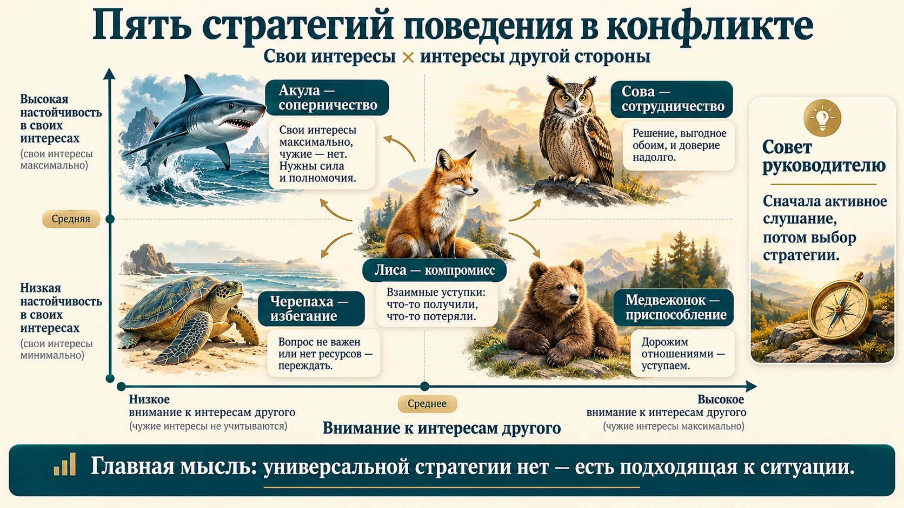
| Стратегия | Образ | Свои / чужие интересы | Когда уместна |
|---|---|---|---|
| Соперничество (конкуренция, принуждение) | 🦈 акула | максимум / минимум | есть власть и абсолютная правота, исход жизненно важен, решение нужно быстро, нечего терять; отношения с другой стороной не важны |
| Избегание (уклонение, уход) | 🐢 черепаха | минимум / минимум | источник разногласий не важен, не можете или не хотите решать вопрос, мало власти, нужно выиграть время |
| Приспособление (уступка) | 🧸 плюшевый медведь | минимум / максимум | правда не на вашей стороне, мало шансов победить, важнее сохранить отношения, проблема вас не волнует |
| Компромисс | 🦊 лиса | середина / середина | нужно быстро найти приемлемое решение, обе стороны одинаково правы и равны по власти, лучше получить хоть что-то |
| Сотрудничество | 🦉 сова | максимум / максимум | компромисс недопустим, важны долгие доверительные отношения, есть время, у сторон равные возможности. Самая трудная: нужно сдерживать эмоции |
«Ориентируемся на интересы другого и минимально на собственные»
Это уступка (приспособление). А руководителю в любом конфликте рекомендуют активное слушание: сначала выслушать стороны, потом выбирать стратегию.
Сетка Томаса — Килманна
Кеннет Томас и Ральф Килманн в 1974 году предложили опросник (Thomas–Kilmann Conflict Mode Instrument). Он раскладывает поведение в конфликте по двум осям: настойчивость (assertiveness, свои интересы) и кооперативность (cooperativeness, интересы другого). На лекции фамилии не прозвучали, но сетка на слайде — их. Образы животных взяты из популярной адаптации: акула, черепаха, медвежонок, лиса, сова.
Как руководителю пользоваться сеткой
- Перед разговором ответьте себе на два вопроса: насколько мне важен предмет и насколько важны отношения. Ответ подскажет стратегию.
- «Сова» дорогая: нужны время и доверие. В аварийной ситуации руководитель вправе быть «акулой», но потом стоит объяснить решение.
- Постоянная «черепаха» у руководителя — признак проблемы: неразрешённые конфликты копятся и уходят в неформальную организацию.
Жизненный цикл организации
Организация проходит путь от идеи до смерти. Чтобы дольше оставаться на вершине, ей нужно постоянно меняться — отсюда дисциплина «Управление изменениями».
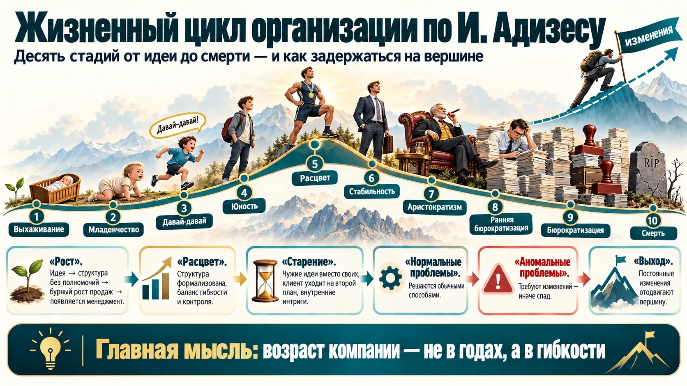
| № | Стадия | Что происходит |
|---|---|---|
| 1 | Зарождение (выхаживание) | идея и последователи автора |
| 2 | Младенчество | структура без чётких полномочий, мало ресурсов |
| 3 | «Давай-давай» (высокая активность) | быстрый рост продаж, новые люди и ресурсы |
| 4 | Юность | собственник уже не справляется один: нанимает менеджеров, появляется структура; конфликт «старой гвардии» и профессионалов |
| 5 | Расцвет | структура формализуется, рост и контроль в балансе |
| 6 | Стабильность | рост ещё есть, но появляются признаки старения |
| 7 | Аристократизм | «почивает на лаврах»: денег много, идеи и проекты покупают, развивают ритуалы и стиль |
| 8 | Ранняя бюрократизация | структурные конфликты: увольняют людей и меняют руководителей, но не структуру; клиент уходит на второй план |
| 9 | Бюрократизация | правила ради правил, организацию держат на плаву извне |
| 10 | Смерть | ликвидация или поглощение более крупной фирмой |
Нормальные и аномальные проблемы
Нормальные проблемы решаются обычными моделями поведения. Аномальные мешают перейти на следующую стадию. Чтобы отодвинуть вершину цикла и не упасть, их нужно преодолевать изменениями.
По слайду, Адизес различает стадии по двум параметрам. Гибкость — способность адаптироваться к изменениям и действовать вне формальных структур. Контролируемость — степень регламентации и жёсткость контроля. Молодая компания гибкая, но плохо управляемая; стареющая — наоборот.
Ловушки на кривой (схема на слайде): смерть в младенчестве, ловушка основателя, несостоявшийся предприниматель, преждевременное старение.
Ицхак Адизес
Ицхак Адизес (р. 1937) — американский консультант, автор книги «Управление жизненным циклом корпорации» (1988, новая редакция 2004). На лекции фамилия была на слайде, но не прозвучала. Ключевая мысль: возраст компании определяется не годами, а соотношением гибкости и управляемости. Молодая компания гибкая, но плохо управляемая; стареющая — управляемая, но негибкая. Расцвет — баланс обоих.
| Упрощённая схема (слайд) | Критерии |
|---|---|
| Рождение | младше 10 лет, неформальная структура, управляет менеджер-собственник |
| Развитие | продажи растут более чем на 15 %, функциональная структура, формализованная политика |
| Зрелость | прирост продаж менее 15 %, организация бюрократичнее |
| Расцвет | продажи снова растут более чем на 15 %, сложные системы контроля и планирования |
| Спад | выпуск ограничен, прибыль падает |
Ранние признаки старения
- Совещания о том, кто виноват, а не что делать; клиент упоминается реже, чем отчёт.
- Новые идеи приходят только как копии конкурентов («аристократизм»).
- Лекарство по Адизесу — вернуть предпринимательскую функцию: дать командам право на эксперименты и мерить результат клиентом.
Бизнес-процессы
Чтобы понять, какие изменения нужны, надо увидеть, из каких процессов состоит организация.
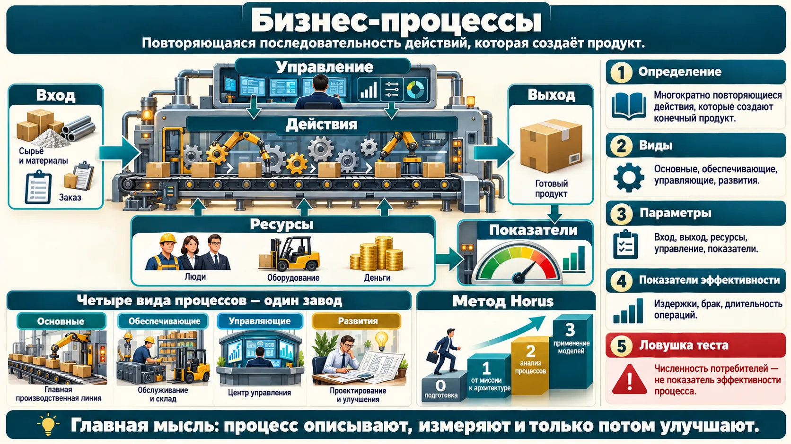
- Основные — ради них создан бизнес, приносят прибыль (в вузе — приём, обучение, выпуск).
- Сопутствующие — тоже приносят прибыль, но не главное направление.
- Вспомогательные и обеспечивающие — ремонт оборудования, кадры, финансы, IT.
- Управляющие — планирование, бюджет, управленческие решения.
- Развития — совершенствование продукта и производства (проректор по развитию).
Вход (сырьё, данные), выход (результат), ресурсы, управляющие воздействия (методики, регламенты, правила), владелец (отвечает за результат), исполнители и критерии оценки — индикаторы, по которым владелец видит «узкие места».
Описать процесс можно текстом (пошаговая инструкция), таблицей или графически — блок-схемой.
Три вопроса, которые показал преподаватель
- Что не относится к показателям эффективности бизнес-процессов? — численность потребителей продукции. Издержки, количество брака и длительность основных операций относятся.
- Расставить этапы бизнес-процесса онлайн-магазина: регистрация → подтверждение регистрации → выбор товара → …
- Метод Horus: 0 — подготовка проекта разработки; 1 — стратегия и архитектура; 2 — детальный анализ бизнес-процессов; 3 — последующее использование модели. На тесте нужно поставить их по порядку.
Что такое метод Horus
На слайде Horus (Horus Business Modeler) назван «первым профессиональным инструментом для моделирования, имитации и анализа бизнес-процессов современного сетевого бизнес-сообщества». Метод разработан в Технологическом институте Карлсруэ (KIT) и центре FZI вместе с PROMATIS. В книге о методе этап 1 называется «От миссии к модели архитектуры» (контекстный, SWOT- и стратегический анализ), этап 2 — «Анализ бизнес-процессов» (структурный и процедурный анализ, оргструктура, ключевые показатели, риски). Затем идут имитационное моделирование и внедрение. Процессы описываются сетями Петри. Для сравнения: в России чаще встречаются нотации BPMN, IDEF0 и инструменты вроде Business Studio и ARIS.
Источник: Шёнталер Ф., Фоссен Г., Оберфайль А., Карле Т. «Бизнес-процессы: языки моделирования, методы, инструменты». М.: Альпина Паблишер (оглавление гл. 4: «Этап 1: От миссии к модели архитектуры», «Этап 2: Анализ бизнес-процессов»).
С чего начать описание процессов
- Составьте список процессов в четыре колонки: основные, обеспечивающие, управляющие, развития. Часто «развития» оказывается пустой, и это диагноз.
- Для каждого основного процесса назовите вход, выход, владельца и два-три показателя: время, стоимость, брак.
- Число клиентов — показатель рынка и маркетинга, а не эффективности процесса. Не смешивайте их в одном KPI.
Бизнес-модели
Бизнес-модель — то, как сочетаются процессы, ресурсы и издержки, чтобы компания создавала ценность и зарабатывала. Единого определения нет, но устоявшиеся модели в тестах узнают по признакам.
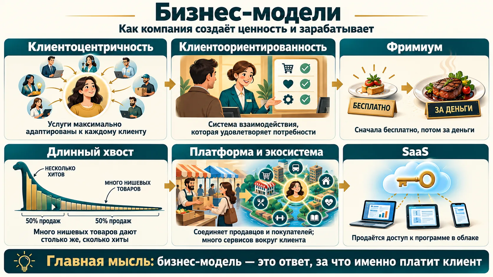
| Модель | Признак | Пример с лекции |
|---|---|---|
| Клиентоцентричность | клиент в центре всего, услуги максимально адаптированы к каждому; «не можем сказать клиенту нет» | при монопсонии — один покупатель, все подстраиваются под него |
| Фримиум | сначала бесплатно, потом за деньги: из свободного доступа — зависимость | сервис проверки компаний: год бесплатно, потом 14 тыс., теперь 38 тыс. ₽; онлайн-кинотеатры |
| Длинный хвост | множество нишевых товаров дают выручку, сопоставимую с хитами | подписался ради одного сериала — смотришь ещё десяток |
| Платформа (маркетплейс) | агрегирует предложения разных продавцов, соединяет продавцов и покупателей | Ozon |
| Экосистема | крупная платформа, которая одновременно работает как фримиум и длинный хвост | Сбер, Ozon, «Тензор» и СБИС |
| SaaS | продаётся доступ к программе в облаке, а не сама программа | «Тензор», 1С, «Контур» |
Как узнать модель по формулировке
- «Максимально адаптированные для каждого клиента услуги» — клиентоцентричность. Клиентоориентированность — понятие уже: система взаимодействия, которая удовлетворяет потребности клиента, но может сказать «у нас так».
- «Агрегирует предложения разных продавцов товаров и услуг» (Ozon) — платформа.
- «Продаётся доступ без физического продукта» — SaaS.
- Пример с кинотеатром и широкой линейкой — длинный хвост; «бесплатно, потом платно» — фримиум.
Пять принципов клиентоцентричности
- Делать для клиента больше: не только продукт, но и подарок, комплимент, дополнительную услугу.
- Индивидуальный подход.
- Добросовестность.
- Эмпатия (сопереживание).
- Обратная связь.
Ещё со слайдов: открытая бизнес-модель — внешние партнёры участвуют в обычно закрытых процессах (НИОКР), им оставляют доходные ниши; экосистема держится на центральной компании, как биологическая — на «ключевом виде». Индустрия 4.0 — киберфизические системы в производстве и быту.
Модели в российском бизнесе
- Фримиум: Telegram бесплатен, а Telegram Premium добавляет функции за подписку; у «Битрикс24» есть бесплатный тариф с ограничениями.
- Длинный хвост: маркетплейсы держат миллионы позиций. На слайде: подписка ради «Игры престолов», а потом зритель смотрит ещё десятки сериалов из каталога.
- Экосистема: «Сбер» (банк, Okko, «Звук», СберЗдоровье — общая подписка СберПрайм) и «Яндекс» (Такси, Еда, Кинопоиск — подписка Плюс) связывают сервисы вокруг одного клиента.
- SaaS: «Контур», СБИС, облачная 1С: платят за доступ, обновления ставит поставщик.
- Клиентоцентричность: во «ВкусВилле» можно вернуть продукт, если не понравился, без долгих объяснений.
Канва бизнес-модели (Остервальдер)
На слайде — шаблон из девяти блоков, который предложил Александр Остервальдер (книга «Построение бизнес-моделей», 2010): ключевые партнёры, ключевые виды деятельности, ключевые ресурсы, ценностные предложения, взаимоотношения с клиентами, каналы сбыта, потребительские сегменты, структура издержек, потоки поступления доходов. На одном листе видно, что, кому и как выгодно продавать. Это не глубокое исследование, а экспресс-анализ: стартапу он помогает проверить идею, действующему бизнесу — найти слабые места.
Что значит «фримиум»
На лекции и на слайде: «Free — распространить информацию о товаре, Premium — продать». Дословно free — бесплатно, premium — премиальная (платная) версия. Схема со слайда: бесплатная услуга, чтобы набрать аудиторию → клиент привыкает → понимает, что базового функционала мало, и покупает премиум.
Длинный хвост — Крис Андерсон
Крис Андерсон, главный редактор журнала Wired, описал «длинный хвост» в статье 2004 года и книге 2006 года. Цифровые магазины почти ничего не тратят на хранение, поэтому могут держать миллионы нишевых позиций. В сумме ниши продаются не хуже хитов: так зарабатывают Amazon, Netflix и онлайн-кинотеатры.
Вопросы к своей бизнес-модели
- За что именно платит клиент: за продукт, за доступ, за выбор, за удобство «всё в одном месте»?
- Можно ли дать часть ценности бесплатно, чтобы снизить порог входа (фримиум), и какая функция станет платной?
- Клиентоцентричность дорога: она оправдана, когда клиентов мало и каждый крупный. Для массового рынка обычно хватает хорошей клиентоориентированности.
Управление изменениями
Третий вопрос темы по плану. До него лекция не дошла: время закончилось на бизнес-моделях. Раздел собран по слайдам преподавателя — они будут в PDF, и по ним тоже возможны вопросы теста.
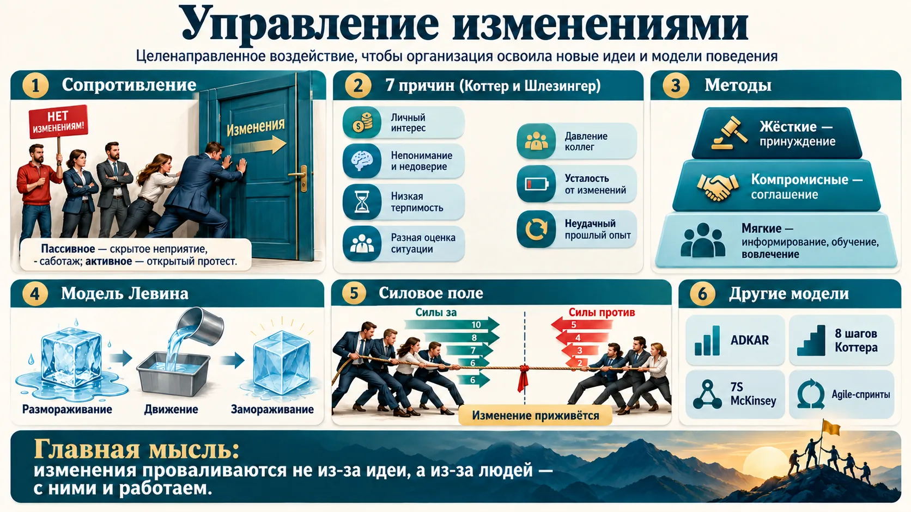
Сопротивление неизбежно
Большинство людей не любят нового и опасаются последствий: система стремится сохранить себя.
- Пассивное — скрытое: нет инициативы, задания игнорируются, падает производительность, человек хочет уйти.
- Активное — открытое: протест, явное уклонение от новшеств, забастовка.
Семь причин (Коттер и Шлезингер)
Личностный уровень:
- узкособственнический интерес — боязнь потерять власть, деньги, комфорт;
- непонимание и недостаток доверия;
- низкая терпимость к изменениям;
- различная оценка ситуации — «потерь больше, чем выгод».
Уровень группы:
- давление коллег;
- усталость от изменений — «изменения ради изменений»;
- неудачный прошлый опыт.
| Метод преодоления | Когда | Плюс | Минус |
|---|---|---|---|
| Жёсткие — принуждение | |||
| Принуждение | нет времени | быстро | саботаж, хуже отношение к руководству |
| Манипуляция | нет других методов | без затрат | потеря доверия при разоблачении |
| Кадровые перестановки | нужно изменить баланс сил | быстро снимает сопротивление | управляемость падает на время адаптации |
| Компромиссные — соглашение | |||
| Соглашение с группами | сильные позиции коллектива | поддержка изменений | время и деньги |
| Гарантии | нужно «сохранить мир» | лояльность | значительные уступки |
| Мягкие — убеждение и вовлечение | |||
| Информирование и обучение | не хватает информации | убеждённые сотрудники | время и деньги |
| Стимулирование и поддержка | трудности адаптации у отдельных людей | индивидуальный подход | время |
| Привлечение к разработке | программы изменений ещё нет | лучшее решение и знания сотрудников | долго согласовывать |
Три шага
- Размораживание — показать, зачем меняться: образ будущего, команда реформаторов, первые маленькие успехи; работать с сопротивлением.
- Движение — обучить новым навыкам, создать среду для закрепления (например, на время адаптации снизить план продаж).
- Замораживание — закрепить новые практики в регламентах и мотивации, отслеживать результат, не дать откатиться назад.
По Левину, успех зависит от личности руководителя: хватит ли ему мотивации и сможет ли он сформулировать цель. Внедрять рекомендуют быстро, чтобы люди скорее увидели результат.
Силовое поле и матрица Хайнингса
Силовое поле (Левин): слева выпишите силы «за», справа — «против», оцените каждую по 10-балльной шкале и сложите. Перевес «против» — изменение скорее не приживётся. Как перевести поле в плюс: добавить сил «за» (поддержка топ-менеджмента, успех конкурентов), запускать так, чтобы сопротивление не росло, не давить на противников слишком сильно.
Матрица Хайнингса: большая потребность и согласие — наивысшие шансы; небольшая потребность и сопротивление — минимальные.
| Модель (слайды) | Суть |
|---|---|
| ADKAR (Джефф Хайятт, Prosci) | пять шагов для каждого сотрудника: Awareness — осознание необходимости, Desire — желание участвовать, Knowledge — знание, как действовать, Ability — умение применить, Reinforcement — закрепление. Каждый шаг оценивают по шкале от 1 до 5; при трёх баллах и меньше к следующему не переходят |
| 8 шагов Коттера (Гарвардская школа бизнеса) | ощущение срочности → руководящая команда → видение и стратегия → донести видение → устранить препятствия → быстрые победы → закрепить успехи и углубить изменения → закрепить в культуре |
| 7S McKinsey | в центре — общие ценности; «жёсткие» элементы — стратегия, структура, системы; «мягкие» — ценности, стиль, персонал, навыки. Перед изменениями проверяют, где элементы не согласованы |
| Матрица Ноэля Тичи | для стремительных изменений: технические, политические и культурные аспекты организации |
| Agile | продукт создаётся короткими циклами-спринтами: планирование, анализ требований, проектирование, программирование, тестирование, документирование. Основа — Agile-манифест |
Кто проводит изменения
Чаще всего изменения внедряют руководители: топ-менеджер или руководитель среднего звена, которому поручили проект. Крупные компании нанимают менеджеров по трансформации (на слайде — вакансии такого профиля). Им нужны компетенции двух видов: управленческие и знание отрасли, в которую приходит новшество. Типичный сценарий — внедрение CRM в отделе продаж. Если менеджерам не объяснили, зачем это (Awareness, Desire), они продолжат вести клиентов в блокноте, и система «не взлетит», даже если сама она хорошая.
Чек-лист перед запуском изменения
- Кто теряет власть, деньги или комфорт? Это ваше будущее сопротивление (причина 1) — поговорите с ними до приказа.
- Не было ли недавно другой «реформы»? Усталость от изменений и неудачный опыт (причины 6–7) лечатся быстрыми победами и честным разбором прошлого.
- Привлеките к разработке тех, кто будет работать по-новому. Это дольше, но решение получится лучше, а сопротивления меньше.
- После запуска «заморозьте»: регламент, KPI, обучение новичков по-новому. Иначе через полгода всё вернётся.
Что выучить к экзамену
Отмечайте пункт, когда можете объяснить его своими словами без подсказки. Отметки сохраняются в браузере.
Первая тема готова к экзамену.
Проверьте себя
Восемнадцать вопросов в формате экзаменационного теста. После ответа — правильный вариант и короткий разбор.
1. Обязательные атрибуты организации (по лекции) — это…
2. Какая формулировка — миссия, а не цель?
3. «Функции работника выходят за рамки регламентированных трудовых обязанностей» — это…
4. Аббревиатура, которой описывают мир после 2020 года:
5. Функция трудовой организации, которая позволяет подавлять конфликты и учитывать интересы групп, —
6. Совет экспертов и помощников вне основной иерархии (учёный совет вуза) — элемент … организации.
7. Чем филиал отличается от дочернего общества?
8. Предприятие со штатом 12 человек и доходом 90 млн ₽ в год относится к…
9. Участник, который отвечает по долгам всем своим имуществом, — это…
10. Организационная форма, где участник обязательно лично работает, —
11. Временное соглашение нескольких компаний под крупный капиталоёмкий проект — это…
12. Объединение, в котором участники теряют управленческую и финансовую самостоятельность, —
13. Стратегия поведения в конфликте, при которой ориентируются на интересы другого и минимально на собственные, —
14. Что НЕ относится к показателям эффективности бизнес-процессов?
15. «Максимально адаптированные для каждого клиента услуги» — это…
16. Правильная последовательность этапов метода Horus:
17. Сотрудники не спорят с нововведением, но перестали проявлять инициативу и тянут с заданиями. Это…
18. Три шага модели Курта Левина:
Отвечено: 0 / 18
Шпаргалка: главное из занятия
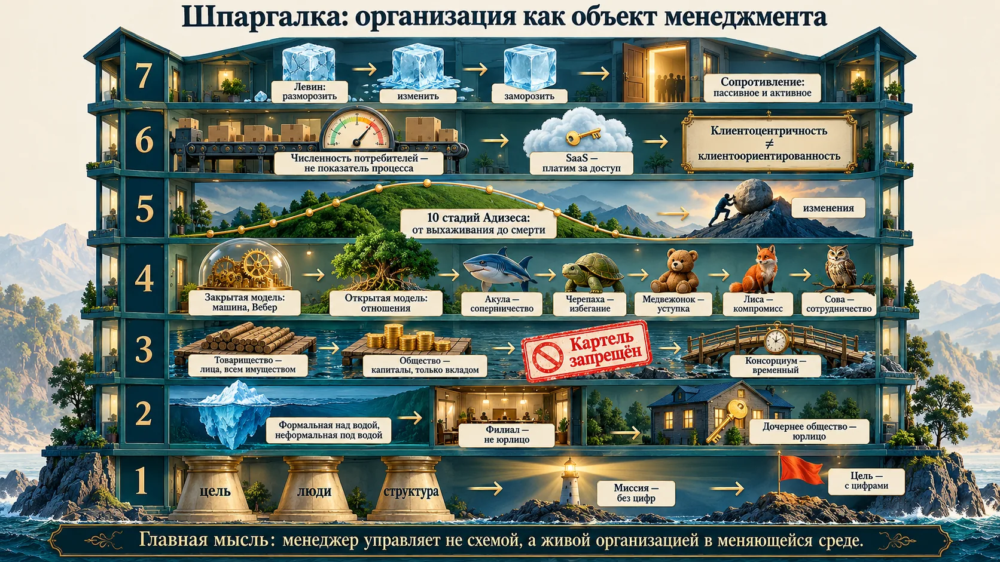
- Организация = цель + люди + структура. Атрибуты: искусственность, цель, упорядоченность. Миссия — без цифр, цель — с цифрами.
- Мир BANI требует новой организации: гибкая структура, временные команды, функции шире регламента.
- Айсберг: формальная организация (линейные, функциональные, штабные связи) и неформальная (внеформальная, социально-психологическая).
- Филиал — не юрлицо, дочернее общество — юрлицо. Микро — до 15 человек, малое — до 100, среднее — до 250.
- Товарищество — лица (всё имущество), общество — капиталы (вклад). Коммандитист даёт деньги, но не ведёт дела.
- Объединение определяют по сути: картель — сговор (запрещён), консорциум — временный проект, концерн — цепочка, синдикат — общая продажа, пул — общая прибыль, трест — жёсткое подчинение.
- Модели — очки теории: закрытые (машина, Вебер) и открытые (отношения); в жизни — смесь.
- Конфликт: акула, черепаха, медвежонок, лиса, сова; уступка — интересы другого; руководителю — активное слушание.
- Адизес: 10 стадий от выхаживания до смерти; вершину отодвигают изменения.
- Процессы и модели: численность потребителей — не показатель процесса; Horus — этапы 0–3; клиентоцентричность ≠ клиентоориентированность; SaaS — платим за доступ.
- Изменения: сопротивление неизбежно; причины — по Коттеру и Шлезингеру; Левин: разморозить → изменить → заморозить.